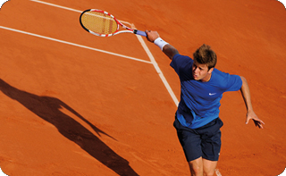

История большого тенниса
История большого тенниса началась со второй половины 19 века. К сожалению, точных сведений о том, кто придумал этот вид спорта, нет. Считается, что создателем игры является майор Уолтон Вингфилд. Первые официальные правила были созданы в 1873 году.
В следующем, 1874 году, Вингфилд запатентовал свое изобретение в надежде получить с этого хорошую прибыль. Однако идея майора провалилась, и никаких доходов от созданной игры он не получил. И, тем не менее, история большого тенниса начала свое бурное развитие. Поначалу особой популярностью игра пользовалась только в США и Великобритании, но затем постепенно обрела поклонников по всему миру.
Турнирная история тенниса
Первый официальный турнир по теннису был организован в июле 1877 года. Это случилось в Англии, в городе Уимблдоне. Соревнование принял у себя Уимблдонский клуб тенниса и крокета. Можно смело сказать, что именно с этого момента началась турнирная история тенниса.
Сегодня Уимблдонский турнир известен каждому любителю спорта, это самое старейшее соревнование из серии Большого шлема. Кроме того, он единственный, который проводится на травяном покрытии. Ну и наконец, надо отметить, что на прошедших Олимпийских Играх в Лондоне теннисный турнир был проведен на кортах Уимблдона. Поэтому этот пригород Лондона имеет полное право считаться знаковым местом для истории тенниса. Здесь она началась и до сих пор продолжает писаться.
Открытый чемпионат США
US Open проходит каждый год в конце лета в Нью-Йорке. Игры проводятся во всех разрядах, начиная от одиночного мужского и заканчивая турниром ветеранов. А как начиналась история этого знаменитого соревнования? Самый первый турнир был проведен в 1881 году в Ньюпорте. Он имел статус национального чемпионата США по теннису среди мужчин. А с 1887 года стал проводиться и национальный женский чемпионат. Ньюпорт был ареной теннисных баталий до 1978 года, после чего турнир переехал в Нью-Йорк, в парк Флашинг Медоус.
Кубок Дэвиса
Еще один знаменитый командный теннисный турнир, вошедший в историю большого тенниса, это кубок Дэвиса. Самое первое командное соревнование прошло в 1900 году в Массачусетсе. Организаторами соревнований были несколько студентов университета Гарвард, одного из них звали Дуайт Дэвис. Турнир стал проводиться ежегодно. После смерти Дэвиса, в 1945 году, соревнованию было присвоено его имя, и теперь оно известно во всем мире как кубок Дэвиса.
Открытый чемпионат Австралии по теннису
Каждый новый год для спортсменов начинается с Открытого чемпионата Австралии по теннису. Соревнование проводится в январе. Первый турнир прошел в 1905 году, его принял город Мельбурн, тогда он назывался чемпионатом Австралазии. Спустя 22 года соревнование переименовали в чемпионат Австралии, а свое нынешнее название и нынешний статус были присвоены турниру в 1969 году. Именно тогда к участию впервые были допущены все желающие, в том числе профессиональные игроки.
Ролан Гаррос

И последний «Большой» турнир – Открытый чемпионат Франции по теннису, или как его еще называют Ролан Гаррос. Как и все остальные турниры, он проводится ежегодно, время проведения турнира с конца мая по начало июня. Место проведения Париж, столица Франции.
Немного об истории данного соревнования: первый национальный чемпионат Франции состоялся в 1891 году, и занял всего один день. Победителем стал игрок из Англии, которого звали Х.Бриггс. Первый женский чемпионат был проведен в 1897 году, его выиграла Франсуаза Масон. Международный статус турнир получил в 1925 году, а профессиональные игроки получили право принимать участие в чемпионате в 1968 году.
Победа на любом из данных турниров считается очень престижной. А наивысшим достижением для любого теннисиста является победа на всех 4-х турнирах за свою карьеру. Об этом мечтает каждый профессиональный спортсмен. Однако войти в историю большого тенниса в качестве победителя хотя бы одного турнира БШ удается немногим.